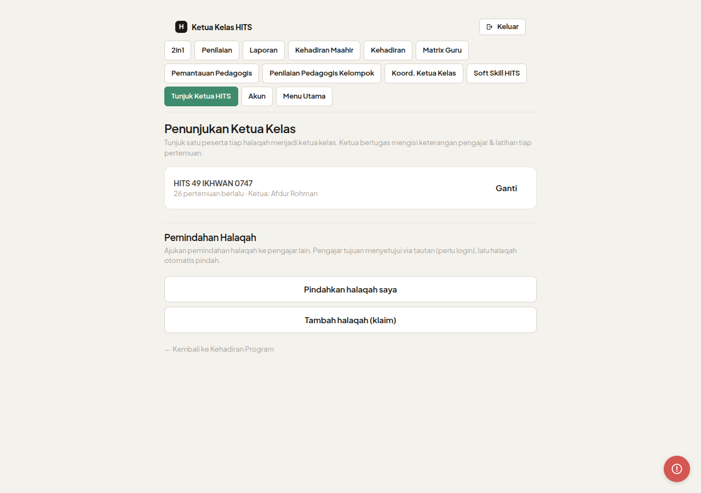
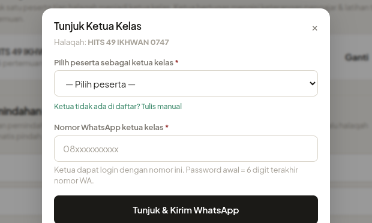

Ketua Kelas · Pemindahan Halaqah · Klaim Halaqah · Tabayyun · Ubah Level
Login pengajar → halaman ini jadi pusat kontrol halaqah.
Tunjuk ketua kelas, ubah level, pindahkan atau tambah halaqah.
Klarifikasi kondisi kelas yang tercatat tidak ideal langsung dari sini.


Peran ganda. Jika nomor WA sudah punya akun peran lain, muncul notifikasi persetujuan — koordinator akan mengonfirmasi.
Persetujuan dua arah. Sistem kirim tautan persetujuan ke pengajar tujuan via WhatsApp. Pengajar tujuan buka tautan (perlu login) dan menyetujui → halaqah otomatis berpindah.
Di halaman utama pengajar.
Dari dropdown yang tersedia.
Muncul otomatis setelah batch dipilih — sesama gender.
Permintaan terkirim ke pengajar lama (jika ada) atau langsung ke koordinator.
Perlu persetujuan. Klaim halaqah yang sudah ada pengajar perlu persetujuan pemilik lama. Halaqah tanpa pengajar langsung ditambahkan ke akun setelah koordinator konfirmasi.
Pilih peserta sebagai ketua kelas per halaqah. Sistem otomatis buat akun login ketua. Password awal = 6 digit terakhir nomor WA.
Ajukan transfer halaqah ke pengajar lain (sesama gender). Pengajar tujuan harus menyetujui via tautan sebelum halaqah berpindah.
Klaim halaqah yang belum terhubung ke akun. Perlu persetujuan pemilik lama atau koordinator sebelum ditambahkan.
Respons permintaan klarifikasi kondisi kelas dari koordinator. Tulis alasan untuk tiap kondisi yang dicatat tidak ideal.
Perbarui level materi halaqah (Dasar/Lanjutan) jika peserta berpindah level. Koordinator perlu memvalidasi perubahan ini.
Login dengan nomor WA & password → menu Tunjuk Ketua HITS di navigasi atas. URL: /hits/pengajar
| Fitur | Fungsi | Rute |
|---|---|---|
| Dashboard Pengajar | Pusat kontrol halaqah | maahir.muhajirproject.org/hits/pengajar |
| Tunjuk Ketua Kelas | Tunjuk / ganti ketua per halaqah | maahir.muhajirproject.org/hits/pengajar |
| Pindahkan Halaqah | Transfer halaqah ke pengajar lain | maahir.muhajirproject.org/hits/pengajar |
| Tambah / Klaim Halaqah | Klaim halaqah belum terhubung | maahir.muhajirproject.org/hits/pengajar |
| Tabayyun | Klarifikasi kondisi kelas ke koordinator | maahir.muhajirproject.org/hits/pengajar |